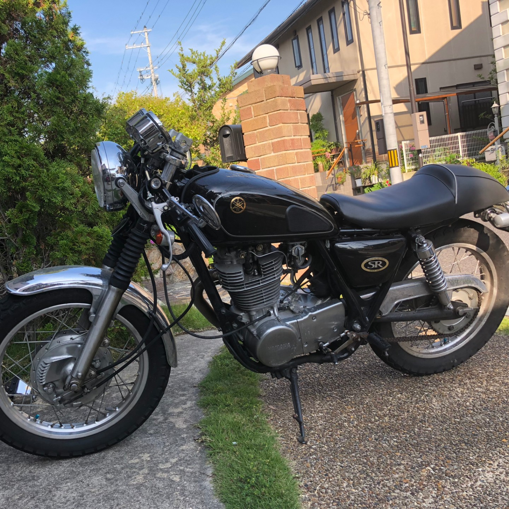
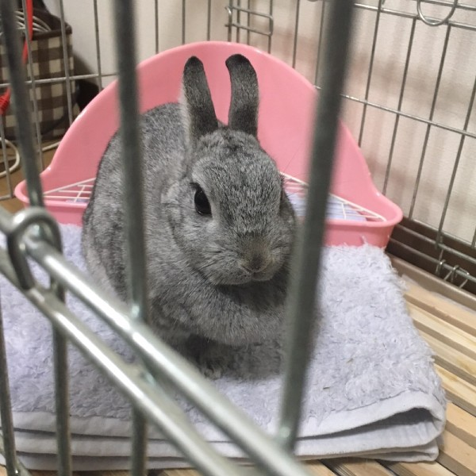

Who are you ?
プロフィール
藪根 茂樹(ヤブネ シゲキ)
大阪府出身 → 埼玉県
立命館大学
好き/得意
ウサギ
スポーツ
音楽
教えること
資格/その他
基本/応用情報 合格
LPIC-L1 合格
情報処理安全確保支援士 学習中


藪根 茂樹(ヤブネ シゲキ)
大阪府出身 → 埼玉県
立命館大学
ウサギ
スポーツ
音楽
教えること
基本/応用情報 合格
LPIC-L1 合格
情報処理安全確保支援士 学習中
「Bloody Monday」を見て
IT/ハッカーの世界に憧れ
JavaScriptの書籍を１冊やり遂げる
HTMLでホームページ作成
自作HPをプロバイダ提供の
サーバで運用
友人にプログラミングを教えることで
自分が教えることが上手だと認識
サイバーセキュリティ
基本/応用情報技術者試験 合格
Androidアプリ開発
（カメラ/電子署名/通信 機能）
Ruby on Rails で
サークルの業務アプリケーション作成
SIerのセキュリティソリューション部門で
ソリューションの開発に注力
開発に加え、SI事業では身に付きにくいビジネス感覚を
ソリューション事業を通して学習中
中学・高校
大学
SIer
１つ１つの練習に意味をもたせ
理論的に上達の道筋を試行錯誤
卓球
個人戦大阪府ベスト１６
ボクシング
約５０名のスパーリング大会でMVP
軽音楽サークルの運営役
サークルのIT班長
Youtube発信で対外アピール
クラウドストレージで情報伝達を促進
会社外部の
エンジニアコミュニティに参画し
有益な情報を発信するなど,
積極的な学びの姿勢を維持
私が大学生の時に所属していた,軽音楽サークル用の
事務手続き用業務アプリケーションです！
練習場使用の申請や,部費発生状況の確認等,
私が運営に携わっていた時に感じた不便を
ITの力で解決できないかと考え,作成しました！
HTML/CSS
ruby on Rails
MySQL
GitHub
ubuntu
Heroku
バンドを管理するための
書類の管理が大変……
バンドの登録/削除/並び替えなどを
ネット上で完結！
部費を徴収するバンドを
練習場使用履歴から探さないと……
DBの練習履歴から
毎月自動で部費発生状況をお知らせ！